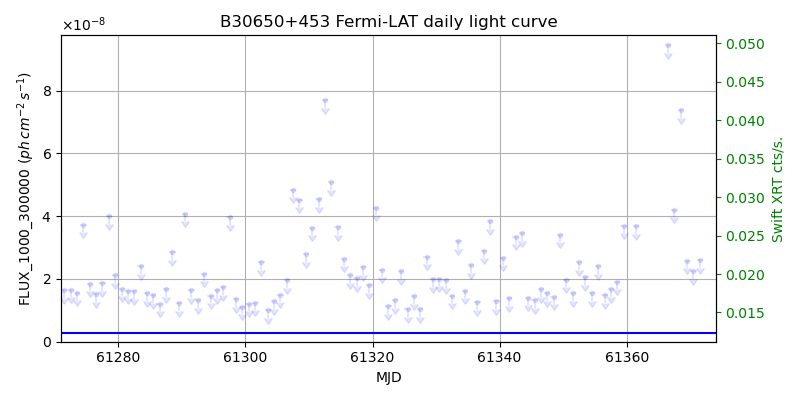
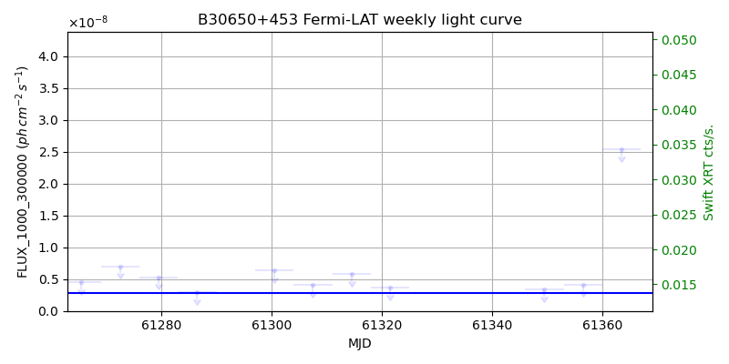

LAT Lightcurve site: https://fermi.gsfc.nasa.gov/ssc/data/access/lat/msl_lc/source/B3_0650p453
Swift site: https://www.swift.psu.edu/monitoring/source.php?source=B30650+453
NED: Query
Time of last update of this page: UT: 2026-11-20 16:17 (MJD: 61364.679)
| Property | Value |
|---|---|
| R.A. | 6:54:23.76 |
| Dec. | 45:14:24.0 |
| z | 0.933 |
| 3FGL SpectrumType | PowerLaw |
| 3FGL PL Index | 2.29 |
| 3FGL Flux_100_300000 | 5.59e-08 1 / (s cm2) |
| 3FGL Flux_1000_300000 | 2.88e-09 1 / (s cm2) |
| 3FGL Flux >200 GeV | 3.14e-12 1 / (s cm2) |
| 3FGL Extrap. Crab >200 GeV | 0.01 |
| 3FGL Flux After EBL Absorption >200GeV | 6.11e-14 1 / (s cm2) |
| 3FGL EBL Crab Fraction >200GeV | 0.00 |
| MJD | dMJD | Flux | dFlux | Frac3FGL | FracCrab>200GeV | EBLFracCrab>200GeV |
|---|---|---|---|---|---|---|
| 61356.50 | 0.50 | 8.59e-08 | 0.00e+00 | 0.00 | 0.00 | 0.00 |
| 61357.50 | 0.50 | 1.39e-07 | 0.00e+00 | 0.00 | 0.00 | 0.00 |
| 61358.50 | 0.50 | 3.19e-07 | 0.00e+00 | 0.00 | 0.00 | 0.00 |
| 61359.50 | 0.50 | 8.04e-08 | 0.00e+00 | 0.00 | 0.00 | 0.00 |
| 61361.50 | 0.50 | 5.96e-07 | 0.00e+00 | 0.00 | 0.00 | 0.00 |

| MJD | dMJD | Flux | dFlux | Frac3FGL | FracCrab>200GeV | EBLFracCrab>200GeV |
|---|---|---|---|---|---|---|
| 61307.50 | 3.50 | 4.05e-08 | 0.00e+00 | 0.00 | 0.00 | 0.00 |
| 61314.50 | 3.50 | 4.29e-08 | 0.00e+00 | 0.00 | 0.00 | 0.00 |
| 61321.50 | 3.50 | 1.59e-07 | 0.00e+00 | 0.00 | 0.00 | 0.00 |
| 61349.50 | 3.50 | 1.25e-07 | 0.00e+00 | 0.00 | 0.00 | 0.00 |
| 61356.50 | 3.50 | 8.90e-08 | 0.00e+00 | 0.00 | 0.00 | 0.00 |

| MJD | dMJD | Flux | dFlux | Frac3FGL | FracCrab>200GeV | EBLFracCrab>200GeV |
|---|---|---|---|---|---|---|
| 61356.50 | 0.50 | 1.48e-08 | 0.00e+00 | 0.00 | 0.00 | 0.00 |
| 61357.50 | 0.50 | 1.67e-08 | 0.00e+00 | 0.00 | 0.00 | 0.00 |
| 61358.50 | 0.50 | 1.91e-08 | 0.00e+00 | 0.00 | 0.00 | 0.00 |
| 61359.50 | 0.50 | 3.70e-08 | 0.00e+00 | 0.00 | 0.00 | 0.00 |
| 61361.50 | 0.50 | 3.67e-08 | 0.00e+00 | 0.00 | 0.00 | 0.00 |

| MJD | dMJD | Flux | dFlux | Frac3FGL | FracCrab>200GeV | EBLFracCrab>200GeV |
|---|---|---|---|---|---|---|
| 61307.50 | 3.50 | 4.08e-09 | 0.00e+00 | 0.00 | 0.00 | 0.00 |
| 61314.50 | 3.50 | 5.80e-09 | 0.00e+00 | 0.00 | 0.00 | 0.00 |
| 61321.50 | 3.50 | 3.61e-09 | 0.00e+00 | 0.00 | 0.00 | 0.00 |
| 61349.50 | 3.50 | 3.39e-09 | 0.00e+00 | 0.00 | 0.00 | 0.00 |
| 61356.50 | 3.50 | 4.15e-09 | 0.00e+00 | 0.00 | 0.00 | 0.00 |
--------------------------------------------------------- Using user-supplied coords: 6:54:23.76 45:14:24.0 2000 --------------------------------------------------------- FLWO UT night of: 2026-11-21 Local Sid. @ Midnight: 03:37 Sunset (-15.0) (local, UT): 18:33 01:33 Sunrise (-15.0) (local, UT): 05:47 12:47 Moonrise (local, UT): Moonset (local, UT): 03:40 10:40 Moon phase: 0.85 --------------------------------------------------------- AzTime LSID UT Obj_el Obj_az Mn_el Mn_az Sep. --------------------------------------------------------- 18:33 22:09 01:33 -0.8 31.7 47.9 117.4 88.3 19:03 22:39 02:03 2.3 35.6 53.3 125.0 88.1 19:33 23:09 02:33 6.0 39.2 58.2 134.7 87.9 20:03 23:39 03:03 10.1 42.5 62.3 146.9 87.7 20:33 00:09 03:33 14.6 45.4 65.1 162.1 87.5 21:03 00:39 04:03 19.2 48.1 66.3 179.7 87.3 21:33 01:09 04:33 24.1 50.4 65.4 197.5 87.1 22:03 01:39 05:03 29.0 52.3 62.9 213.2 86.9 22:33 02:09 05:33 34.2 53.9 59.0 225.9 86.7 23:03 02:39 06:03 39.4 55.1 54.2 235.9 86.5 23:33 03:09 06:33 44.6 55.8 48.9 243.9 86.3 00:03 03:39 07:03 49.9 55.8 43.2 250.4 86.1 00:33 04:10 07:33 55.2 55.0 37.3 255.9 85.8 01:03 04:40 08:03 60.4 53.0 31.2 260.7 85.6 01:33 05:10 08:33 65.4 49.1 25.1 265.1 85.4 02:03 05:40 09:03 70.0 42.1 19.0 269.2 85.2 02:33 06:10 09:33 73.8 30.2 12.9 273.0 84.9 03:03 06:40 10:03 76.1 11.8 6.8 276.9 84.7 03:33 07:10 10:33 76.2 349.5 1.0 280.7 84.4 04:03 07:40 11:03 74.0 330.7 -4.9 284.7 84.1 04:33 08:10 11:33 70.2 318.4 -11.1 288.8 83.9 05:03 08:40 12:03 65.7 311.2 -16.8 293.2 83.6 05:33 09:10 12:33 60.7 307.2 -22.3 298.1 83.3 05:47 09:25 12:47 58.2 306.0 -24.8 300.5 83.1 --------------------------------------------------------- Dark hours >55 deg.: 2.11 srcstart (UT): 2026-11-21 10:40 srcend (UT): 2026-11-21 12:46